Create the client
Open Settings → Clients. Create UIDAI with code UIDAI, official name and GAD operational contact. Search before creating so the run remains idempotent.
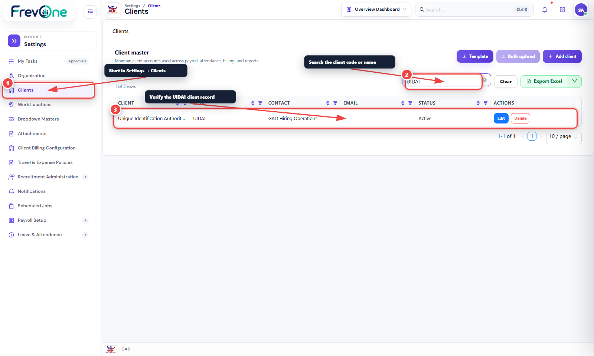
From Client Master and the 50-day GAD pipeline to offer-letter release, employee creation and controlled ESS/MSS user provisioning.
The UIDAI setup is a client configuration on top of shared HRMS services. The same model can support another client with different stages, dates, panel members, templates, scoring components and approval locations.
Open Settings → Clients. Create UIDAI with code UIDAI, official name and GAD operational contact. Search before creating so the run remains idempotent.

Create the issuing Regional Office and the hiring ASK location. The work location selected during employee conversion must belong to the same client.
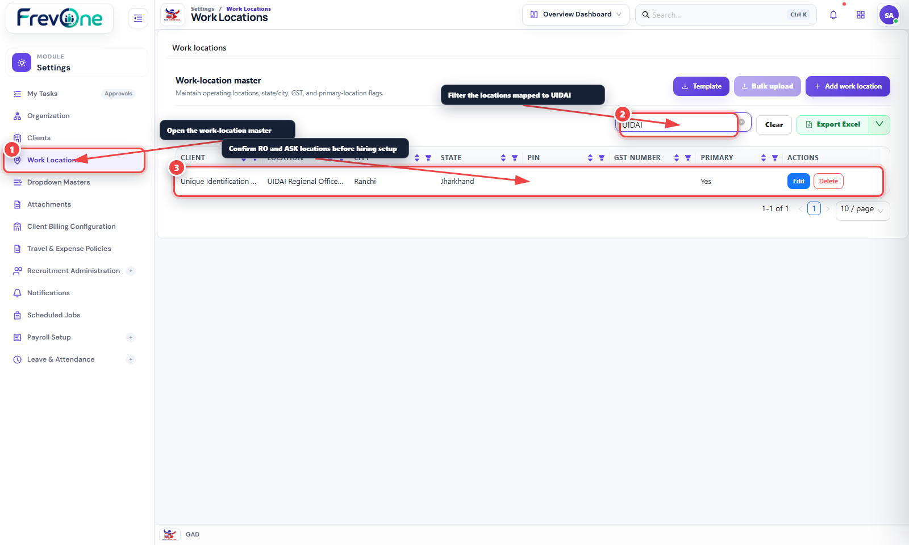
Create GAD Recruiter, UIDAI Stakeholder Approver and Interview Panel access bundles. Then create the six configured users and assign every user to UIDAI client scope.
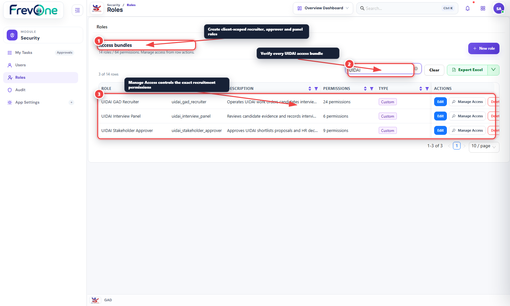
Use Settings → Recruitment Administration → Pipeline Designer. Stages, SLA offsets, stakeholder ownership, panels, candidate actions, notification templates and process documents are versioned with the published pipeline.
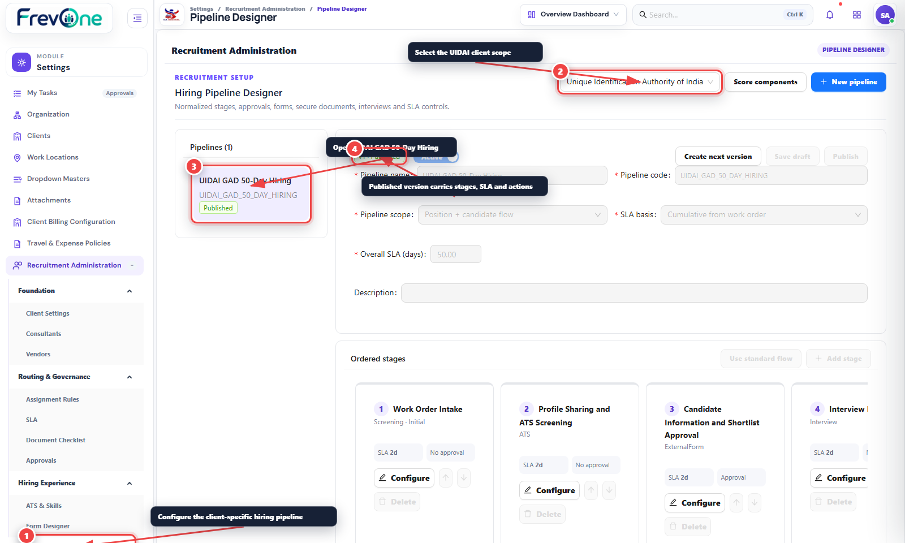
Create the reusable workflows in Workflows → Workflow Setup, then map them to pipeline stages in Recruitment Administration. Recruitment does not maintain a second approval engine.
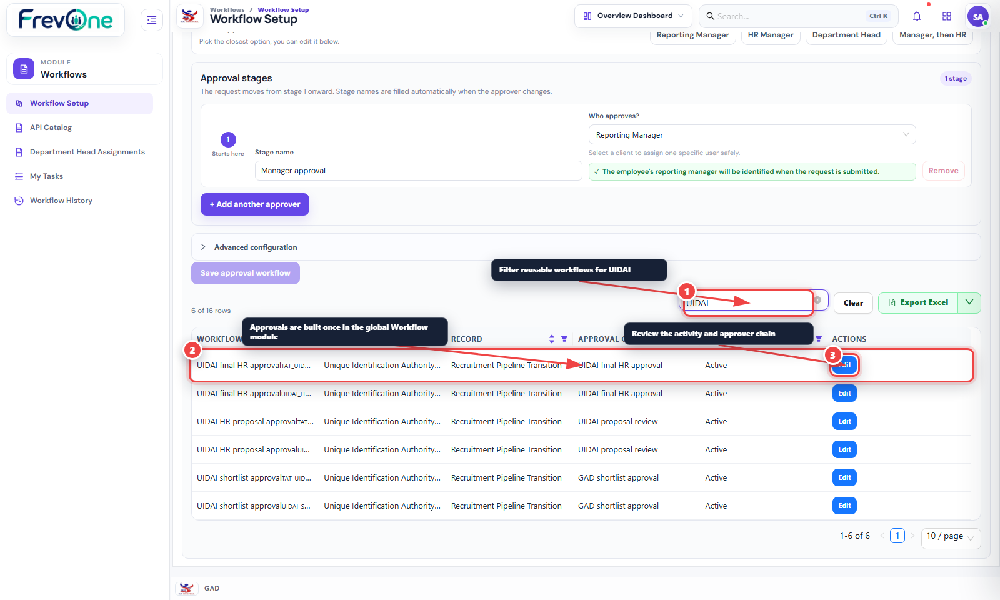
The UIDAI MoM template uses placeholders for position, date, panel, attendance, result and score tables. Interview score components total 100 and the generated Annexure uses actual submitted panel feedback.
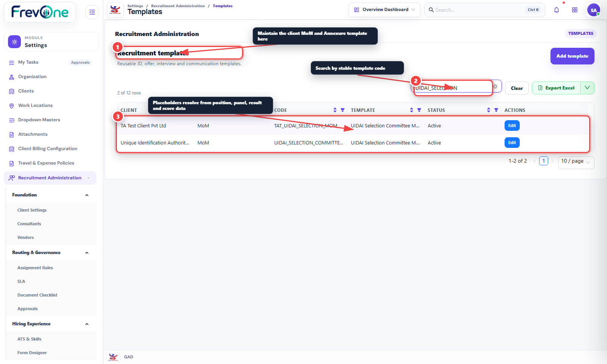
| # | Stage | Cumulative SLA | Stakeholder | Required outcome |
|---|---|---|---|---|
| 1 | Work Order Intake | Day 0 | UIDAI | Manual work order + secured annexure |
| 2 | Profile Sharing & ATS Screening | Day 25 | GAD | Resume intake, ATS evidence, human decision |
| 3 | Candidate Information & Shortlist Approval | Day 25 | GAD | Secure candidate link + approved batch forward |
| 4 | Interview Process | Day 30 | UIDAI | Panel schedule, competency feedback, result |
| 5 | Signing of MoM | Day 33 | GAD | Generated MoM/Annexure + signed final |
| 6 | Negotiation & HR Proposal | Day 38 | GAD | Proposal approval/rejection |
| 7 | Approval from HR | Day 45 | UIDAI | Global workflow/My Tasks decision |
| 8 | Issue Offer Letter | Day 48 | GAD | Generate, approve and release offer |
| 9 | Convey Joining Date to HR | Day 50 | GAD | Joining intimation and checklist |
| 10 | Completed | Day 50 | UIDAI | Convert candidate and hand over onboarding |
Enter the work order manually; incoming email parsing is intentionally skipped. Add position name, band/level, vacancy count, location and division. Upload the original work order and JD annexure through the global attachment service.
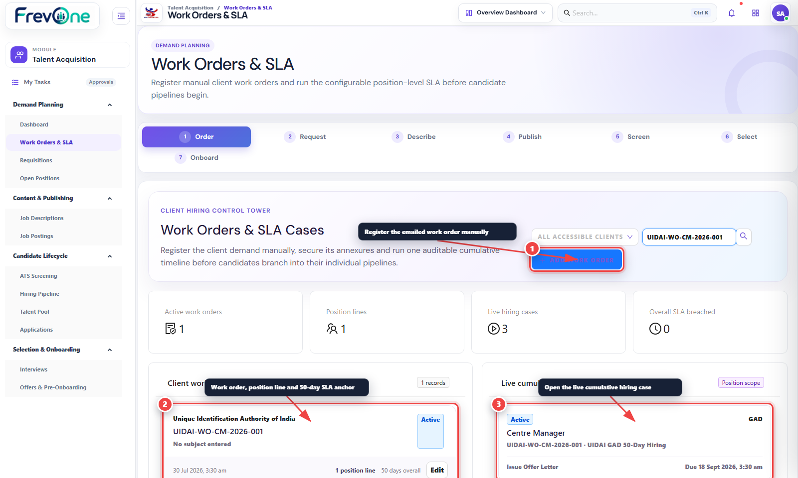
Link the line to the approved open position and published hybrid pipeline, then start the SLA from the received timestamp. Use the timeline for stakeholder, due-date, pause and approval status.
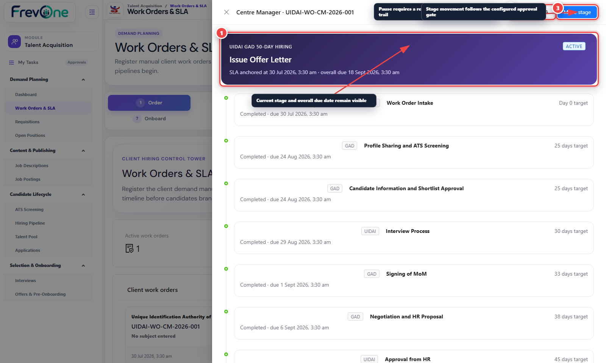
Prepare the approved JD, publish the job posting and share its /careers/{slug} link on LinkedIn/Naukri or another channel. Candidate submissions and uploaded resumes enter the ATS without an HRMS login.
ATS produces evidence, matched/missing skills and a normalized score. Selected profiles receive an expiring candidate-information link for current CTC, notice period, expected CTC and other configured fields. The candidate submits the form directly; incoming email parsing is not required.
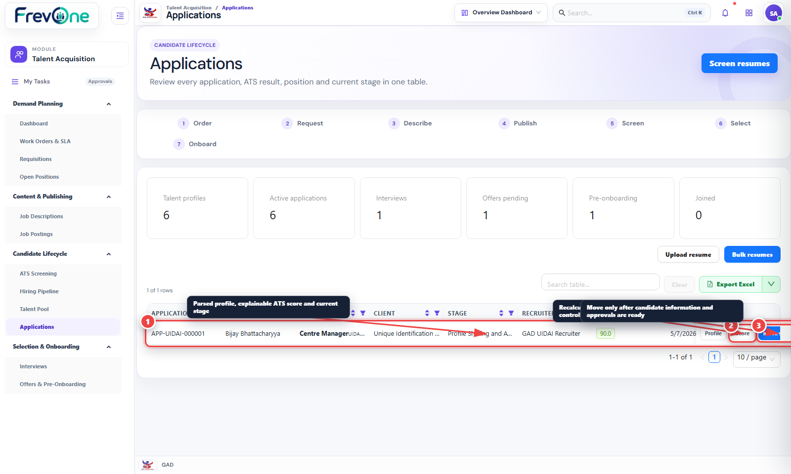
Create a candidate batch only for the hiring-case position. Readiness checks prevent incomplete profiles. The mapped workflow approves the batch before the configured notification sends it to UIDAI recipients.
Select the candidate-specific panel at scheduling time. Every assigned member can view the relevant resume and submit configured component scores. For UIDAI Annexure A: Subject Knowledge is 70 and Assessment is 30.
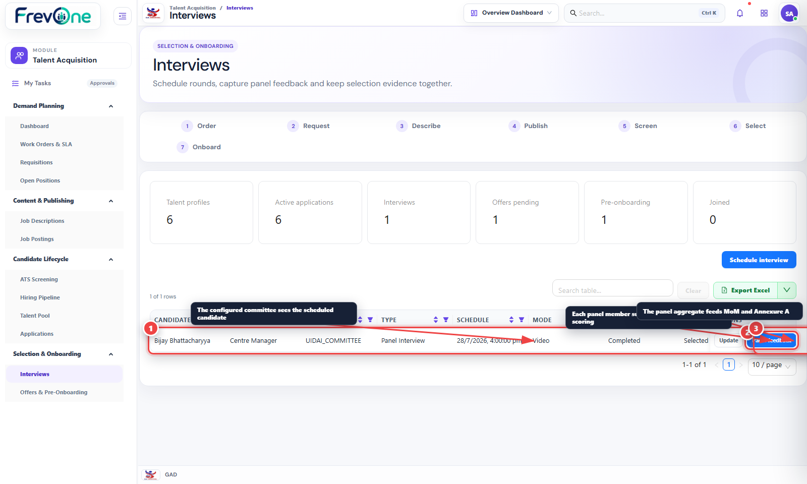
Generate the draft from the selected/not-selected/wait-list results and panel scores. Obtain signatures outside the draft, upload the final signed PDF through secured attachments, then mark it signed. The system does not mark an unsigned generated draft as signed.
Advance through Negotiation & HR Proposal and Approval from HR. Each configured gate starts its global workflow and waits for the approver’s decision in My Tasks.
Create the draft offer, generate the PDF, preview it through a short-lived attachment ticket, then submit/release. When approval is configured, release becomes available only after approval. The secure candidate link supports accept, reject or negotiation.
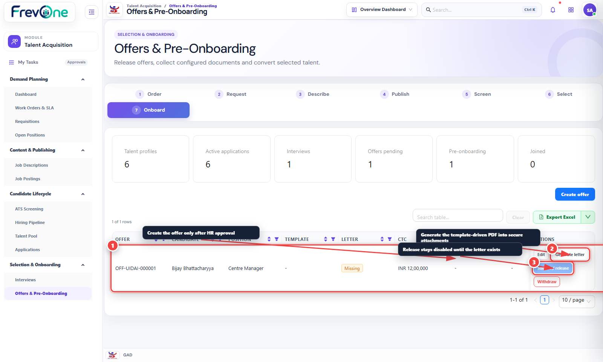
Before conversion, the offer must be accepted and every mandatory checklist item must be completed with the configured verified document where required.
From the candidate 360° profile, choose Create employee. Confirm code, joining date, email, department, designation, work location, annual CTC and the portal-access flag. Recruitment documents and activity remain linked to Employee 360.
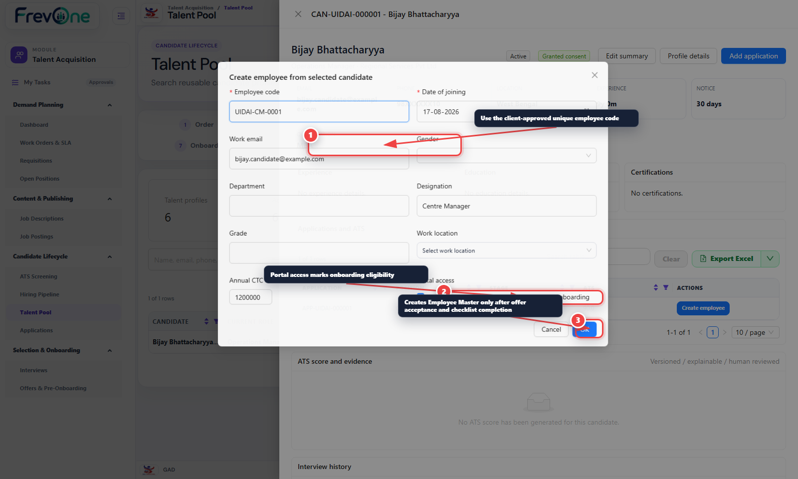
Open Security → Users → Import Employees. Select the converted employee, assign employee for ESS, and add mss_manager only if the employee is a reporting manager. Create the user with a temporary password and keep first-login password change enabled.
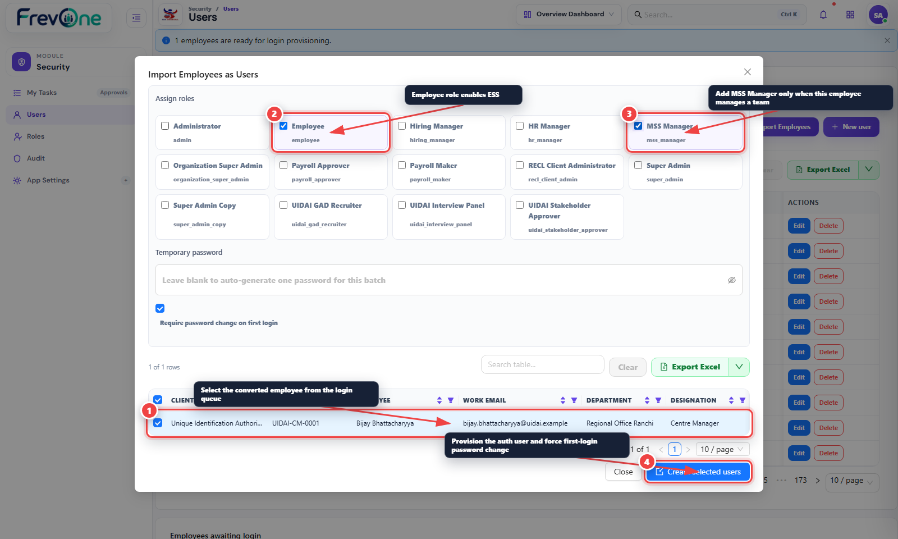
The new user signs in with work email/employee code and the temporary password. After the forced password change, ESS appears for the employee role; MSS/team actions appear only with manager permissions and reporting-manager scope.
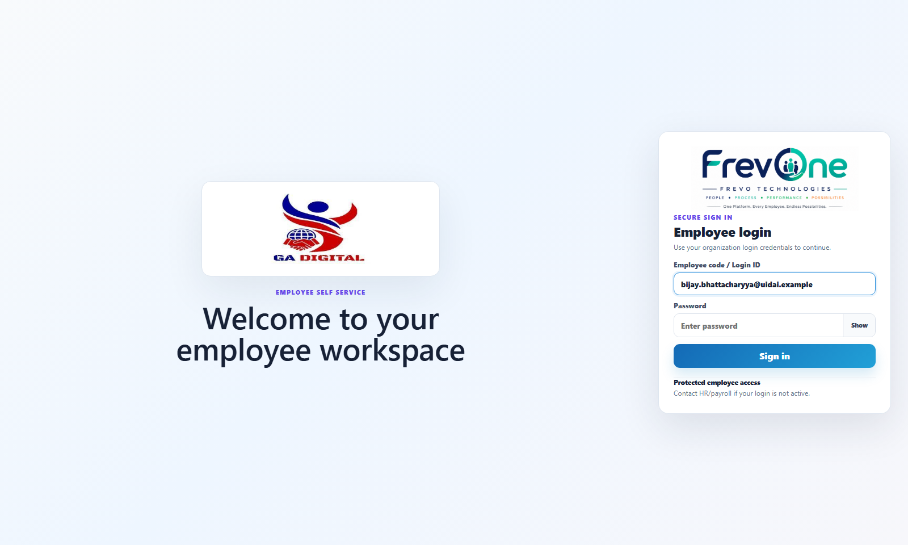
FrevoPilot collects client-specific requirements in chat, validates a complete blueprint, shows a Review & Proceed checkpoint, and then runs the visible idempotent Playwright phases. No UIDAI or future-client business values should be defaulted inside the test.
Regenerate this manual and screenshots with:
cd D:\NewHrms\hrms\playwright-e2enpm run docs:uidai-hiring
HRMS_WEB_URL, HRMS_API_URL, HRMS_MANUAL_ADMIN_USER, HRMS_MANUAL_ADMIN_PASSWORD and optionally HRMS_ESS_URL_FOR_MANUAL. The generator performs read-only live capture; candidate/onboarding screenshots use in-browser sample responses and never write sample candidates or users to the database.